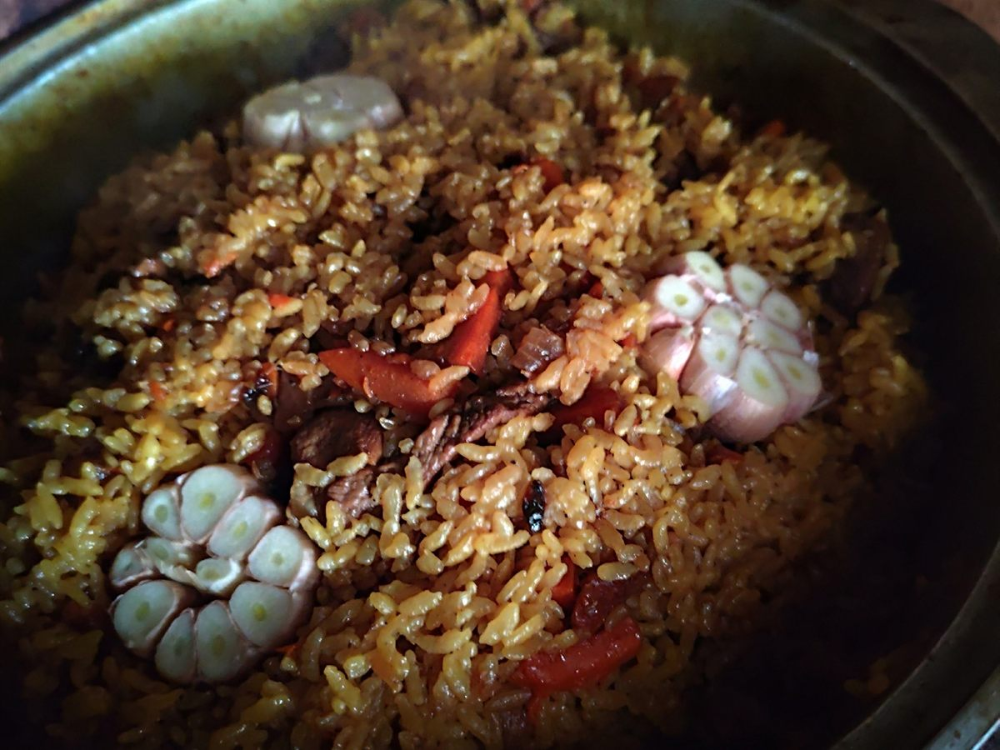

🍚 Плов в казане
Сытное блюдо из риса, мяса и моркови. Готовится в казане: сначала обжариваются мясо и овощи, затем добавляется рис и всё тушится под крышкой.

Ингредиенты
| Ингредиент | Количество |
|---|---|
| Рис для плова | 900 г |
| Мясо (свинина, баранина или говядина) | 900 г |
| Морковь | 900 г |
| Лук репчатый (крупный) | 3 шт. |
| Соль | 4 ч. л. |
| Чёрный молотый перец | 2 ч. л. |
| Карри | 1/2 ч. л. |
| Зира | 1 ч. л. |
| Куркума | 1 ч. л. |
| Барбарис | горсть |
| Чеснок | 3 головки |
| Растительное масло | для жарки |
Приготовление
- Рис промыть в воде 5–7 раз, залить водой и оставить набухать.
- В хорошо разогретое масло положить мясо, нарезанное не мелкими кусками, и обжарить до румяной корочки.
- Добавить крупно нарезанные морковь и лук, обжарить до золотистого цвета. Влить стакан воды. Добавить все специи, кроме соли. Тушить до полного выпаривания воды.
- Мясо разровнять, сверху заложить рис и разровнять. Посолить. Аккуратно, не размывая рис, влить воду по шумовке или краю казана так, чтобы она закрывала рис примерно на две фаланги пальца. Дождаться закипания и проверить воду на соль: она должна быть чуть-чуть пересолена.
- Крышку казана завернуть в полотенце и закрыть казан. Убавить огонь до среднего. Через 25–30 минут открыть, перемешать, собрать рис горкой, выложить очищенные и разрезанные пополам головки чеснока. Закрыть крышкой и оставить ещё на 10–15 минут на минимальном огне.
Совет: вода должна закрывать рис примерно на две фаланги пальца. После закипания проверьте её на соль: она должна быть чуть-чуть пересоленной, потому что рис заберёт часть соли.
Готово! Приятного аппетита.